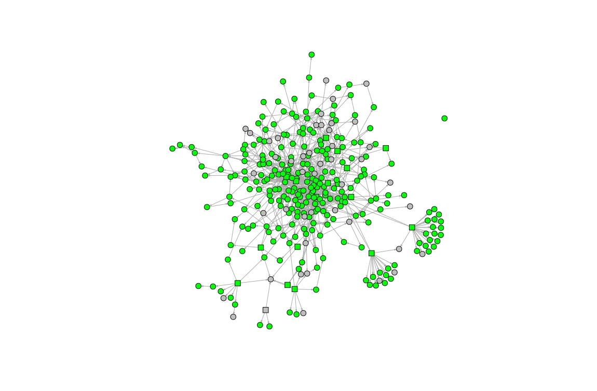

Approach
Our network-based knowledge graph assessment approach consists of three subsequent steps: first, we apply a knowledge graph only perspective and compute network-based metrics to learn about the importance and structural relevance of concepts. Second, we focus on the document corpus and extract concepts and relationships using co-occurrence analysis techniques. Finally, we combine those two perspectives and provide metrics to assess the quality of a knowledge graph in the context of a document corpus.
Knowledge Graph Perspective
In a first step, we extract a network representation from given knowledge graphs expressed in SKOS by extracting skos:Concepts and a configurable set of SKOS2 and non-SKOS relations.
By applying network clustering algorithms, we can identify unconnected components or concepts, which could be an indicator for missing relationships. We also compute the diameter of the knowledge graph, which might be an indicator for genericity or specificity of a knowledge graph. Figure 1 shows a network representation of the All about Cocktails
thesaurus3, with one concept being disconnected from the others. We will use this thesaurus as an example for the following metrics. Knowing which concepts occur both in the thesaurus and the corpus, we can also remove all concepts (vertices) from the thesaurus that are not mentioned in the corpus. The resulting graph can be quite different; so we use both the CG (corpus graph) and the TG (thesaurus graph) for further analysis.

On a concept-level, we compute the degree (number of incoming and outgoing edges) and PageRank of concepts, which can serve as indicators for the importance of a concept. Table 1 shows the degree, Table 2 the PageRank.
| Concept label | degree |
|---|---|
|
„Martini glass“ |
34 |
|
„Contemporary Classics“ |
31 |
|
„The Unforgettables“ |
30 |
|
„Gin“ |
24 |
|
„Shooters“ |
22 |
| Concept label | PageRank |
|---|---|
|
„Martini glass“ |
0.0169 |
|
„Old Tom Gin“ |
0.0121 |
|
„Gin“ |
0.0114 |
|
„Old Fashioned glass“ |
0.0110 |
|
„Vodka Citron“ |
0.0109 |
By computing closeness (mean number of steps to access every other vertex) and betweenness (number of shortest paths going through a concept) of concepts, we can provide insight into the structural importance of concepts. Removing a concept with high betweenness, for example, could split a knowledge graph into several disconnected components.
| Concept label | closeness |
|---|---|
|
„IBA official cocktails“ |
0.00854 |
|
„Beverages“ |
0.00504 |
|
„Contemporary Classics“ |
0.00499 |
|
„The Unforgettables“ |
0.00462 |
|
„Alcoholic beverages“ |
0.00437 |
| Concept label | betweenness |
|---|---|
|
„Distilled beverages“ |
0.00161 |
|
„Liquer“ |
0.00124 |
|
„Alcoholic beverages“ |
0.00088 |
|
„Contemporary Classics“ |
0.00082 |
|
„Vermouth“ |
0.00074 |
Combined Knowledge Graph and Corpus Perspective
The intuition behind this step is that a knowledge graph, which is a tailored to a specific domain, defines concepts and semantic relations, which should also appear in a document corpus taken from that domain.
As shown in Figure 2, possible discrepancies can already be observed by mapping corpus concepts onto a thesaurus network. This example shows a coverage of 81% - green vertices (concepts) show up in both the thesaurus and the corpus.

For the second part of our analysis, we go beyond simple coverage rate. Ideally, a thesaurus and a corpus share the same concepts4 and relations. The basic metrics are: number of distinct concepts; total concept occurrences; concept coverage (how many concepts of the thesaurus show up in the corpus?).
Having gathered this information, we attempt to judge on how well a thesaurus fits a given corpus (or vice versa), going beyond simple concept coverage rate. For this, we calculated Pearson correlation coefficients between document frequency (df) of concepts on the one hand, and PageRank, closeness and betweenness on the other hand (Table 5).
| Correlation | Pearson correlation | p-value |
|---|---|---|
|
df & degree, TG |
0.165 |
0.006 |
|
df & degree, CG |
0.169 |
0.005 |
|
df & PageRank, TG |
0.017 |
0.77 |
|
df & PageRank, CG |
0.036 |
0.55 |
|
df & betweenness, TG |
0.172 |
0.004 |
|
df & betweenness, CG |
0.175 |
0.003 |
|
df & closeness, TG |
0.130 |
0.03 |
|
df & closeness, CG |
0.111 |
0.06 |
Furthermore, we use concept co-occurrences as a measurement for semantic distance in the corpus, which we expect to be reflected in the thesaurus as well. For this, we perform a logarithmic transformation of co-occurrences to the range [1, thesaurusDiameter d]. The expectation here is that the higher the co-occurrence of any given pair of concepts is, the smaller should be their distance in the thesaurus. We apply cosine similarities of distance vectors to quantify the gap between optimal distances according to the co-occurrences and real distances based on the TG and the CG. A result of -1 means they are exactly opposite, 1 that they are the same and 0 indicates orthogonality:
(1)
This resulted in a cosine similarity of 0.80 for the complete thesaurus graph TG, and 0.77 for the corpus graph CG.
Preliminary Results
We have applied our methodology on a combination of 4 thesauri and 7 document corpora. Guided by our proposed metrics and combined with manual inspection, we were able to:
-
Find missing relationships between concepts, which were of semantic relevance in the corpus, but not reflected in the thesaurus.
-
Identify structural flaws in existing thesauri.
-
Map document corpora to specific regions of a thesaurus. This could be useful for creating domain-specific thesauri from generic knowledge graphs.
Currently, a clear limitation of our approach is that our proposed approach has not yet been evaluated against a gold-standard dataset. Therefore, we propose to implement the methodology presented here in a series of snapshots, triggered by the number of edits made. With this, domain experts can determine whether the concepts and relations they add have meaningful impact on the knowledge graphs quality.